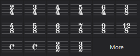
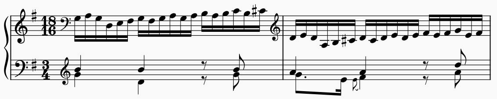
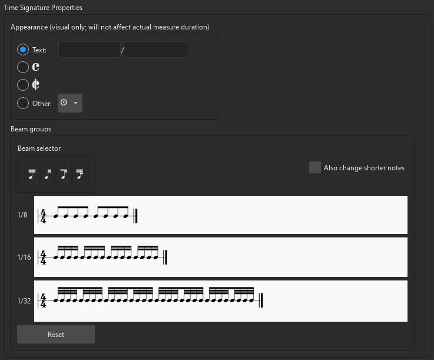

拍号
概述
拍号从拍号面板应用：

创建新乐谱时，初始拍号可以在新建乐谱对话框的第二页设置。默认值为 4/4，如果你跳过此页面，将使用该默认值。
添加拍号
要添加拍号或替换现有拍号：
- 在乐谱中选中一个小节、音符或休止符，或拍号
- 在拍号面板中单击一个拍号。
或者，直接将拍号从面板拖到你希望它出现的小节上。
目前，拍号变化只能发生在小节开头。
更改拍号会导致其后所有现有音乐被重新划分小节，此过程中某些项目可能会丢失，因此应仔细检查更改。
删除拍号
要删除拍号，选中它并按 Del。
如果删除乐谱开头的拍号，音乐将被视为处于名义上的 4/4 拍，并相应地重新划分小节。
创建自定义拍号
如果你需要的拍号不在面板中，可以使用创建拍号对话框创建自己的拍号。你可以从拍号面板访问此对话框：
- 在拍号面板中，点击更多
- 在弹出窗口中点击创建拍号按钮
或者，从主面板：
- 从菜单栏中选择视图 → 主面板，或按 Shift+F9
- 从对话框左侧的列表中选择拍号。
要在此对话框中创建你的拍号：
- 在数值中，输入分子和分母
- 如果你希望拍号的显示方式与其实际值不同，请在文本字段中输入你希望看到的文本
- 如有必要，在符杠分组部分调整符杠（见下文）
要将新拍号添加到拍号面板，点击添加按钮。现在你可以像往常一样从面板将其添加到乐谱中。
控制拍号可见性
要在特定谱表上（整个乐谱中）切换是否显示拍号：
- 右键单击谱表，从上下文菜单中选择谱表/分谱属性...
- 勾选/取消勾选显示拍号复选框。
要在所有谱表上隐藏某个特定拍号：
- 选中该拍号
- 在属性面板的常规下，取消勾选可见切换开关（或直接按 V）。
有关控制提醒拍号可见性的信息，请参阅下文的提醒拍号。
添加局部拍号
有时不同的谱表上可能同时有不同的拍号。在此示例中，全局拍号是 3/4，但右手谱表以 18/16 记谱：

巴赫：戈德堡变奏曲，第 26 首
我们称之为“局部”拍号，即只适用于单个谱表，而不是所有谱表。
要添加局部拍号，请在按住 Ctrl（Mac：Cmd）的同时添加拍号（可以从面板拖到所需谱表，或选中小节并在面板中单击拍号）。
局部拍号总是产生与全局拍号相同长度的小节；你可以将其视为在每个小节上放置一个不可见的连音（在上述巴赫示例中，是一个 18:12 的连音）。目前还无法实现不同长度的小节。
此外，如果谱表上有任何后续音乐，则无法在该谱表上添加局部拍号。
调整拍号大小
- 选中一个拍号
- 在属性面板的拍号下，调整缩放值。水平和垂直缩放可以分别修改。
更改缩放会影响拍号出现处的所有谱表。
拍号属性
要打开拍号属性对话框，可以：
- 右键单击拍号，从菜单中选择拍号属性
- 选中拍号，然后点击属性面板中拍号下的拍号属性按钮。

外观
这些选项允许你更改拍号的外观，而不影响其底层的节奏值。可在以下选项之间选择：
- 文本：插入你希望在乐谱上出现的名义分子和分母（如果为空，乐谱上将显示实际值）
- 四四拍（Common time）
- 二二拍（Cut time）
- 其他：包含中世纪和文艺复兴时期比例符号的下拉菜单。
符杠分组
在这里你可以自定义音符组如何加符杠。请参阅设置拍号的默认符杠。
提醒拍号
通常，当拍号变化发生在系统开头时，会在前一个系统末尾显示一个提醒（也称为提示）拍号。
要禁用或重新启用整个乐谱中的所有提醒拍号：
- 从菜单栏中选择格式 → 样式，然后
- 从左侧列表中选择谱号、调号与拍号
- 在拍号下，勾选/取消勾选显示提醒拍号复选框。
要隐藏或显示单个提醒拍号：
- 选中父拍号（即不是提醒本身）
- 在属性面板的拍号下，勾选/取消勾选在上一系统显示提醒拍号复选框。
要控制在反复和跳转记号周围发生的情况，请参阅反复和跳转处的变化与提醒。
拍号样式
样式对话框（格式 → 样式 → 谱号、调号与拍号）中拍号 → 位置下有三个拍号位置选项：
- 在所有谱表上：在每个谱表上显示拍号（这是默认且最常见的样式）
- 在谱表上方：仅在特定谱表上方显示拍号，通常以较大的尺寸
- 跨谱表：跨谱表显示拍号，通常以更大的尺寸
对于“在谱表上方”和“跨谱表”选项，拍号被视为系统标记，并将出现在你在排版面板中为系统标记指定的位置。更多信息请参阅管理系统标记。
接下来是样式和大小的设置，对于三种位置设置而言这些设置略有不同，并且可以为每种样式独立设置：
- 数字样式，有三个选项：
- 普通
- 窄体（常用于“在谱表上方”和“跨谱表”样式）
- 窄体无衬线（常用于“跨谱表”样式，尤其是在管乐队和电影乐谱中）
- 与小节线对齐（仅适用于“在谱表上方”）：拍号应相对于小节线左对齐还是居中对齐
- 跨谱表对齐（仅适用于“跨谱表”）：拍号应对齐到其所适用谱表组的顶部，还是垂直居中
- 缩放：拍号的大小，以其“正常”大小的倍数表示；水平和垂直设置是联动的，但如果你想独立调整它们，请点击右侧的锁定图标
- 数字间距（已缩放）：拍号中上下数字之间的垂直距离，按垂直缩放设置进行缩放
- 垂直放置：相对于默认垂直位置的偏移量
如果开启了显示提醒拍号，“在谱表上方”样式还会有谱表末尾对齐选项：
- 悬入页边距：允许拍号悬入页边距（仅当与小节线对齐设置为居中时可用）
- 内缩拍号：将拍号右对齐到页边距，而不移动小节线
- 内缩小节线：将拍号右对齐到页边距，向内移动小节线以保持所需的对齐
样式对话框（格式 → 样式）中还有一些更全局的拍号样式设置：
- 在小节下，内边距中，有一些设置用于配置拍号与其他项目之间的距离：
- 谱号到拍号
- 调号到拍号
- 小节线到拍号
- 拍号到小节线
- 在小节下，系统表头中，还有一个距离设置：
- 拍号到第一个音符（仅适用于系统开头）
- 在小节线中，在拍号前使用双小节线有三个选项：
- 总是：始终使用双小节线
- 从不：始终使用单小节线
- 仅在提醒拍号前：在提醒拍号前使用双小节线，否则使用单小节线。